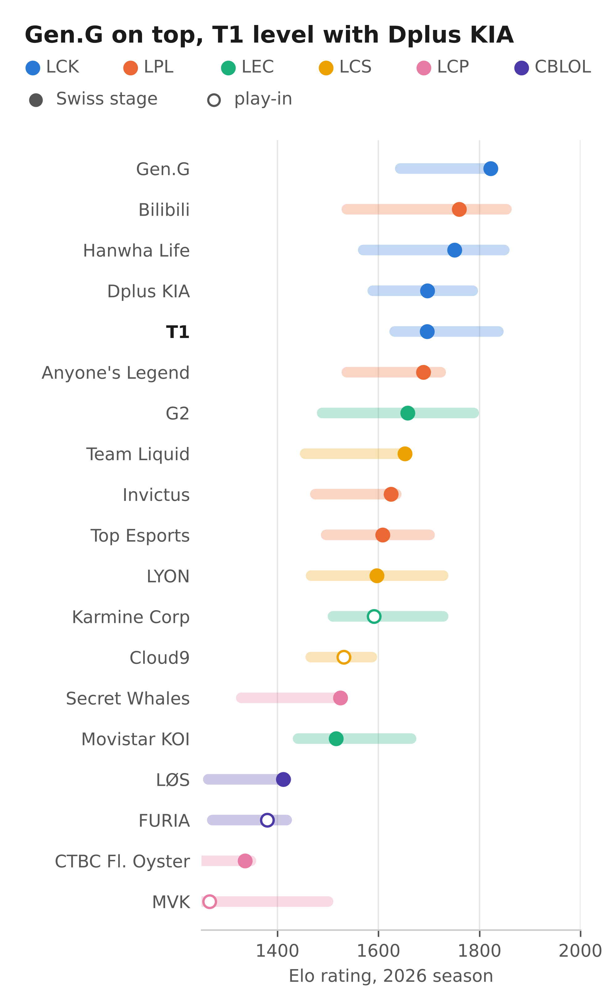
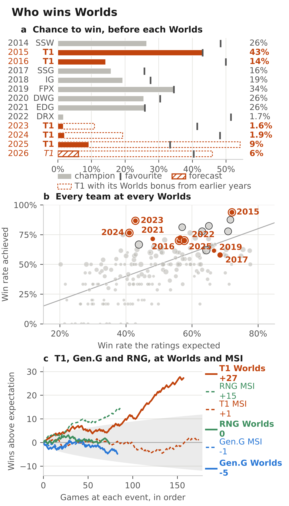
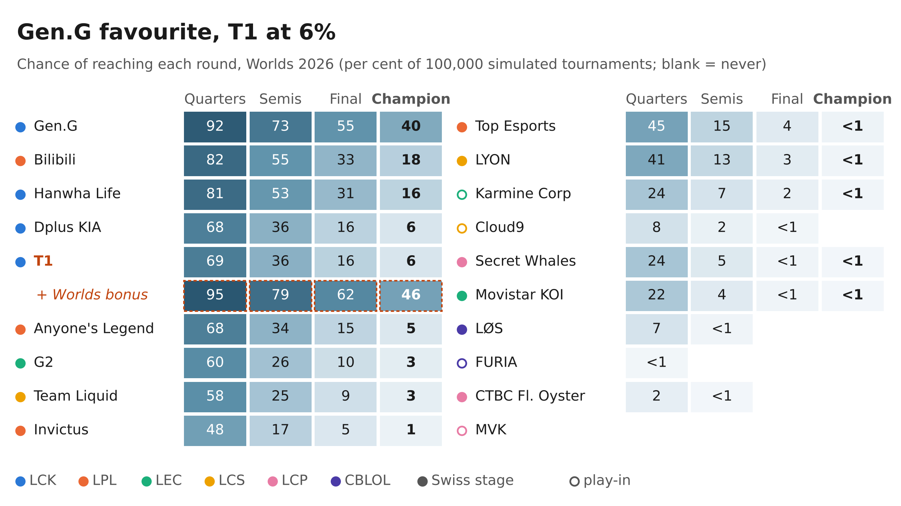
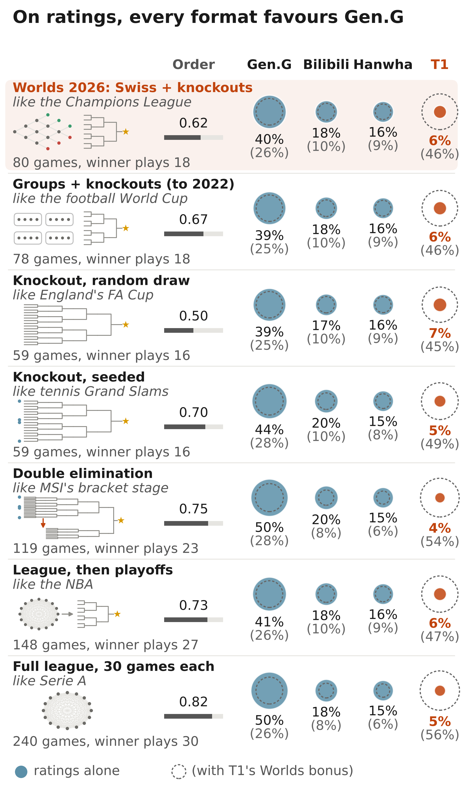

#002 T1: the Korean esports team that transforms in October
Elo ratings for every professional League of Legends team since 2011, every Worlds from 2014 to 2026 simulated in its real format, a test of T1's Worlds-only over-performance, and this year's teams replayed under seven tournament formats. Also in Italian: T1: la squadra coreana di esport che a ottobre si trasforma.
Read the articleShort versionLeggi in italianoSubscribe on Substack
Figures
Click an image for full resolution.

code/bit/fig_big.py.
code/bit/fig_if.py.
code/bit/fig_odds.py.
code/bit/fig_true.py.Check the article
pip install -r requirements.txt make check # re-derives 46 printed numbers from data/, PASS/FAIL each, in both editions make figures # redraws every figure, English and Italian
The derived data are in the repository; make figures needs the raw Leaguepedia snapshot in raw/ (from the Zenodo record, or make data, which fetches today's version). On the shipped data all 46 numbers reproduce, and the figure scripts redraw the published figures (titles and margins can shift by a few pixels between matplotlib versions). make all reruns the whole analysis in a few hours; see the README.
Data sources
| Dataset | Provider |
|---|---|
| Professional League of Legends results, 2011–2026 (snapshot of 27 September 2026) | Leaguepedia contributors, CC BY-SA 3.0, via the Hugging Face dataset gptilt/lol-esports-matches |
| Six series results, 27 September to 10 October 2026 | news reports (Sheep Esports, Dot Esports, Terra, Strafe, Pichau Arena) |
| National-team football results | martj42/international_results on GitHub, CC0 |
| Global Power Rankings; lolproelo.com ratings | Riot Games; lolproelo.com. Not redistributed (no licence found): values blanked, scripts recollect them |
What is checked, and what is not
All 46 checks run from the shared data. Not checkable from the package: the comparisons with Riot's rankings and lolproelo.com (their values are not redistributed), five files produced by one-off commands during the analysis, and a byte-identical rebuild of the games table. The README lists them.
How to cite
Cite the archive, not the post. One Zenodo record holds this issue's code and data together: Gallotti, R. (2026). BIG IF TRUE #002: T1: the Korean esports team that transforms in October [Code and data]. Zenodo. The DOI is added here on publication.
Cards on the table
This analysis was written and run by Claude Opus 5.5 under the author's direction, not re-read line by line and not peer-reviewed. The bug log records the errors found and fixed, and KEY_NUMBERS.md lists every number in the article. Found a difference? Open an issue.
Related peer-reviewed work: De Bois et al., IEEE Transactions on Games (2025); González-Díaz, Gossner & Rogers, Journal of Economic Behavior & Organization (2012); Sziklai, Biró & Csató, Computers & Operations Research (2022). Full references in the article.
Ratings summarise results: they know nothing of rosters, injuries, patches or the draft, and games within a series are treated as independent.